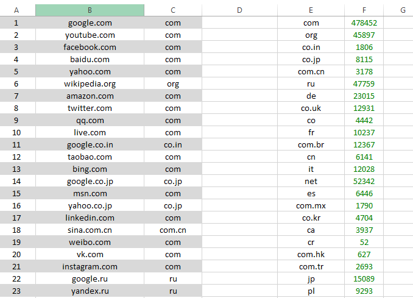
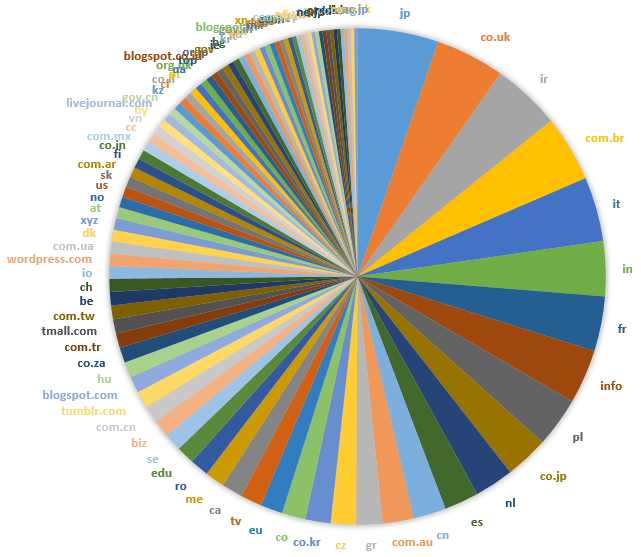

Alexa 前100万网站域名后缀统计
记得前两天看到一篇 文章, 讲了 .io 域名在 Alexa 网站排名中的一些事情. 我就很想知道在 Alexa 这个榜单里, 各种 domain extension 都占了多大的份额, 想看看最流行的这些网站的建设者都喜欢用哪些主流和非主流的域名后缀.
第一步, 数据. Alexa 网站提供世界排名前100万的网站 榜单, 但这个 .csv 格式的榜单是每日更新的, 数据是根据近一个月的访问量而定.
第二步, 排序. 主要还是依靠 Excel. 先将数据另存为 .xlsx 格式, 如下图:

原始数据只有A列和B列. 我们将后缀提取出来, 放在C列. 这里我们在C1中输入 =RIGHT(B1,LEN(B1)-SEARCH(".",B1)), 就会将B列中的网址按第一个 . 做分割, 保留后面的域名后缀部分. 因为列很长, 所以用鼠标拖动的办法不是很好用, 因此可以使用下面的方法可以为整列应用公式, (出处: superuser):
- Copy your formula Ctrl + C
- press ↓
- Ctrl + Shift + ↓ selects to the last nonblank cell
- paste Ctrl + V
然后是统计C列的频率, 呈现在E, F列里. 操作:
- 先将B列中所有内容复制到E列，然后选中E列，在 数据 标签中点击 删除重复项, 在弹出窗口中选择 以当前选定区域排序 按钮, 最后确定即可.
- 在F1中输入 =COUNTIFS(C:C,E1), 并用上面的方法将这个公式应用到整个对应的F列
有了F列的数据, 就可以按F列进行排序了. 这份2016年5月27日的100万个网址里, 共计使用了2040种不同的后缀(.org.cn 与 .cn 属不同后缀). 前100种如下:
com 478452 net 52342 ru 47759 org 45897 de 23015 jp 15089 co.uk 12931 ir 12750 com.br 12367 it 12028 in 10255 fr 10237 info 10152 pl 9293 co.jp 8115 nl 7295 es 6446 cn 6141 com.au 5750 gr 4901 cz 4712 co.kr 4704 co 4442 eu 4151 tv 3978 ca 3937 me 3639 ro 3499 edu 3398 se 3298 biz 3270 com.cn 3178 tumblr.com 3158 blogspot.com 3050 hu 2897 co.za 2880 com.tr 2693 tmall.com 2665 com.tw 2565 be 2510 ch 2474 io 2325 wordpress.com 2300 com.ua 2239 dk 2200 xyz 2174 at 2087 no 1988 us 1978 sk 1914 com.ar 1913 fi 1815 co.in 1806 com.mx 1790 cc 1733 vn 1638 by 1573 livejournal.com 1441 gov.cn 1395 kz 1387 cl 1374 co.il 1347 pt 1310 ua 1268 org.uk 1244 top 1217 blogspot.co.id 1207 or.jp 1192 gov 1191 ie 1142 bg 1135 kr 1113 lt 1089 su 1047 co.id 1031 gov.in 988 blogspot.in 988 mx 953 club 937 az 848 xn--p1ai 812 ac.in 791 co.nz 768 com.my 722 pk 722 nic.in 719 edu.cn 705 tw 698 hr 696 ne.jp 683 pro 683 or.kr 674 org.br 671 mobi 657 lv 656 com.sg 642 ae 634 pw 632 com.hk 627 ac.jp 611
排前面的几种 com, net, ru, org, de 都不出人所料, 都超过了2万个. 为画图方便, 我们在下面的统计图中把这前5个略去, 看一下这前100个后缀的分布情况:

有一些现象也比较值得注意, 比如 .biz 后缀越来越边缘化, 已排到了31名, 落后很多国别域名. 在注册商们的大力推广(忽悠)下, .co 也的确越来越受到认可, 排在了23名. 其它近些年比较受初创企业欢迎的域名后缀也都表现不错, .tv 25名, .me 27名, .io 42名, 而曾经被注册商大力忽悠的 .cc 55名, 忽悠中的 .pw 98名, 以及几年前一些国外初创企业偏好的 .ly 253名. 一些 new gTLD 也慢慢受到认可, 比如 .xyz 46名, .top 66名, .club 79名, .pro 91名, .tech 102名, 等等. 这份排名在注册非 .com 域名后缀时也有一定的参考意义.
注释
Comments powered by Disqus